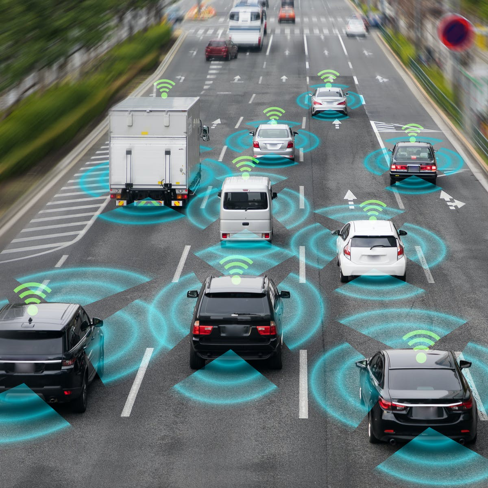

An autonomous vehicle is a vehicle that operates without human participation because it has the ability to perceive the environment. The passenger is not required to drive the vehicle, as the presence of the passenger in the vehicle is optional. An autonomous vehicle can go anywhere and do everything a traditional car with an experienced driver can do. The creation of autonomous is aimed at reducing accidents, traffic congestion, and CO2 emission. However, The configuration of autonomous vehicles is more complicated than a normal vehicle because it is a combination of many complex systems, applying modern technology such as a safety system for the blind-spot warning, automatic emergency braking. .
Billions of dollars invested in autonomous vehicle technology, which has helped people make spectacular strides in the technology age but it also reminds us of how much longer we are going to complete it. Currently, people still do not fully trust autonomous vehicles because no company has yet allowed a fully self-driving ride on all roads without a supervisor. The autonomous vehicle industry split into two camps: the companies that have created very limited technologies for public users ( complex cruise control systems ) and some companies have introduced fully automated technology but under limited circumstances.
The autonomous vehicle includes different levels:
The global autonomous vehicles market is currently at more than $ 54 billion and could exceed that tenfold by 2026. This interaction between AI( Artifact intelligent) and imaging technology is the main technology element of autonomous vehicles. The sensors will create 3D images of the vehicle and the AI will analyze how the vehicle reacts. Although some companies have made remarkable progress in this field, difficulties will come when a company decides to reduce the total time between image and response. In the coming years, a large number of new cars will be equipped with an intelligent transportation system (ITS) which is relied on the principles of wireless technology and it ought to enable the car to communicate with other cars. These technologies are crucial pieces of the perfect autonomous car as it can predict the events around them on the roads and it is capable of handling the trajectory, speech, and intentions of other vehicles.
For instance, this means drivers can get brake assist before they have an ability to react to external factors, to avoid multiple collisions. With the research of Google, a vehicle that can be driven by itself which requires a combination of a variety of technologies such as pre-programmed maps, radar, laser sensors, and cameras. Every car will go through rigorous testing and a long development phase to ensure that all gear works smoothly at the same time.
Furthermore, the speech control software along with the camera mounted above will read and interpret traffic light signals or other signals that appear on the road. The data is also compared with GPS data to track unexpected changes on the roads like bends or sidewalks. In short, humans need time to be able to complete a perfect autonomous vehicle and create new technologies appropriate for it.
Maybe we are slowly entering the era of autonomous vehicles and this will lead to a big change in the transport platform. According to scientists from the UWICORE lab, they conducted a study demonstrating that the coexistence of autonomous vehicles and conventional manned vehicles significantly affects the general transport platform and development plans of the type of unmanned traffic in particular. There will be a change in the structure of the autonomous vehicles because many predictions assume that most of these vehicles will run on electricity with low fuel costs, but the battery must be quality at a high price. Furthermore, people who will be affected by autonomous vehicles are those who live far away from work because they do not need to drive instead they switch to other users' activities such as reading, sleeping, or simply relaxing. Another significant way that these vehicles can affect life arrangements is to choose an independent life.
For the elderly, the disabled, and the sickness, the autonomous vehicles will greatly influence their lives because of the big challenge they face is moving. According to a report from Boston Consulting Group (BCG), the rise of the autonomous vehicles will create 100.000 jobs in the US mobility industry over the next decade, of which engineers with computer science degrees will have 30.000 jobs. However, taxi drivers or truck drivers will not have jobs because self -driving technology has replaced them to do their work. Besides that, some companies will have jobs for low worked such as receiving calls from customers, cleaning and repairing cars, and Updating high definition maps that cars use to navigate. Therefore, The development of autonomous vehicles will take away some jobs, it also creates new jobs for them.
I think that the emergence of autonomous vehicles will affect my daily life because I still do not believe in those vehicles and their capabilities. I am worried to see them on the road, I imagine that those vehicles have a very high risk of accidents for everyone around because it is not controlled by humans. Furthermore, I am studying Information technology so After graduation, I will have more chances to get a good job because when autonomous vehicles will become common in the world, some companies will need to find some people who have a degree in computer to develop technologies of these vehicles. My friends will be excited to see autonomous vehicles because all of them like studying technology and they also want to invent something in the future. I think they also will research these vehicles in order to know more about how these vehicles work and what technologies did humans create to make them possible?. They also have more chance to achieve their dreams. About my parents, this will affect they because they can not drive a car so when they know the autonomous vehicles which ought to help them to solve their problem such as they can go everywhere without hiring driver and they can be easy to move their commodity. If autonomous vehicles are common in Vietnam, they will help the government solve some problems such as reducing accidents on the roads, traffic jams, and reducing CO2 emission. To sum up, the autonomous vehicles bring a lot of advantages for my family and my friends.